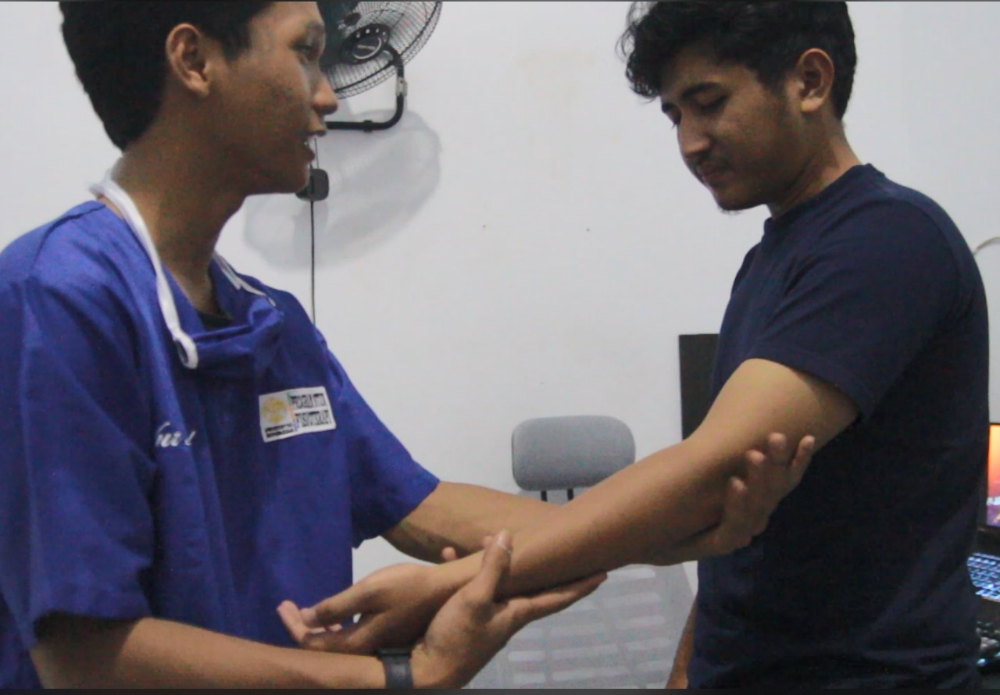
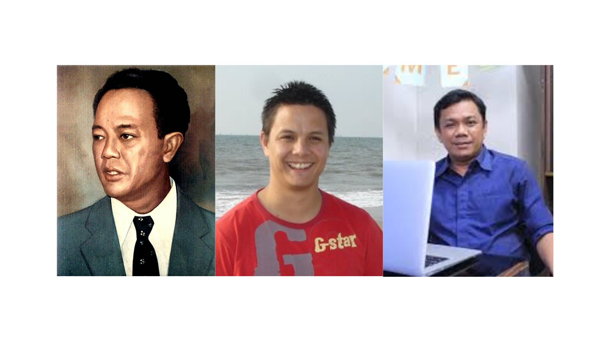

Fisioterapi Secara Umum
Fisioterapi adalah profesi di bidang kesehatan yang bertujuan untuk membantu pemulihan pasien dari cedera, sakit, atau disabilitas. Melalui berbagai teknik seperti terapi manual, latihan fisik, dan penggunaan alat bantu, fisioterapi berfokus pada pemulihan fungsi tubuh dan peningkatan kualitas hidup pasien.
Profesi dan Lulusan Fisioterapi
Lulusan Fisioterapi akan mampu memberikan pelayanan dengan mengembangkan, memelihara, dan memulihkan gerak dan fungsi tubuh sepanjang rentang kehidupan dengan menggunakan penanganan secara manual, peningkatan gerak, peralatan (fisik, elektroterapeutis dan mekanis), pelatihan fungsi, serta komunikasi, dan edukasi (PMK No 80, tahun 2013). Lulusan fisioterapi dapat bekerja di rumah sakit, klinik rehabilitasi, tim olahraga, atau membuka praktik mandiri.
Sejarah Fisioterapi di Dunia

Sejarah fisioterapi dimulai sejak zaman Mesir Kuno (2500 SM). Pada masa Hippocrates (460 SM), teknik pijat dan hidroterapi telah digunakan. Fisioterapi modern mulai berkembang di Eropa pada abad ke-18 dengan kontribusi besar dari Per Henrik Ling.
Sejarah Fisioterapi di Indonesia
Fisioterapi di Indonesia bermula pada tahun 1956 dengan didirikannya Sekolah Perawat Physiotherapy di Solo oleh Prof. Dr. Soeharso. Pendidikan fisioterapi terus berkembang dengan banyak institusi yang mendukung profesi ini.
Tokoh Penting dalam Fisioterapi Global
1. Hippocrates: Bapak Kedokteran, menggunakan teknik pijat dan hidroterapi.
2. Per Henrik Ling: Pendiri metode terapi fisik modern.
3. Mary McMillan: Pendiri American Physical Therapy Association.
Tokoh Penting dalam Fisioterapi Indonesia
 1. Prof. Dr. Soeharso: Bapak Fisioterapi Indonesia.
2. Matias Ibo: Fisioterapis terkenal di dunia olahraga.
3. Wahyudin: Doktor fisioterapi pertama di Indonesia.
Jurusan Fisioterapi Di Indonesia
Fisioterapi adalah profesi kesehatan yang bertujuan memulihkan fungsi tubuh pasien melalui berbagai teknik rehabilitasi fisik. Sejarahnya telah berkembang sejak zaman kuno dengan pijat dan hidroterapi, hingga menjadi praktik modern yang diakui secara global. Di Indonesia, fisioterapi dimulai pada tahun 1956 oleh Prof. Dr. Soeharso yang juga dikenal sebagai Bapak Fisioterapi Indonesia. Berbagai tokoh penting baik dari dunia maupun Indonesia berperan besar dalam pengembangan profesi ini. Seiring kemajuan teknologi dan ilmu pengetahuan, fisioterapi terus berkembang menjadi bagian esensial dari sistem pelayanan kesehatan global.